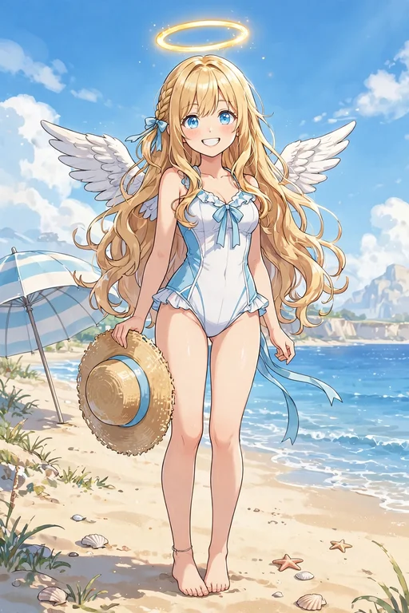
レア
ビーチで初めての水着
降臨して初めての海で、白×水色のワンピース水着に麦わら帽子を手に立つ場面。波の音と潮風に目を輝かせる、夏の始まりの一枚です。サービスシーン編の、海辺のひととき。
サービスシーン編のカード全20種です。衣装と季節の場面だけを集めた特別編で、BOOTHにて販売準備中です（ガチャ・図鑑では無料で見られます）。
この弾の所持 0 / 20種（0%）― あと20種で、この弾はコンプリートです
カードの画像はWeb鑑賞用サイズです。原画の高解像度イラストはサービスシーン編の特集ページからBOOTHのパックでご覧いただけます。ガチャで所持しているカードには「所持 ×N」と表示されます。

レア
降臨して初めての海で、白×水色のワンピース水着に麦わら帽子を手に立つ場面。波の音と潮風に目を輝かせる、夏の始まりの一枚です。サービスシーン編の、海辺のひととき。
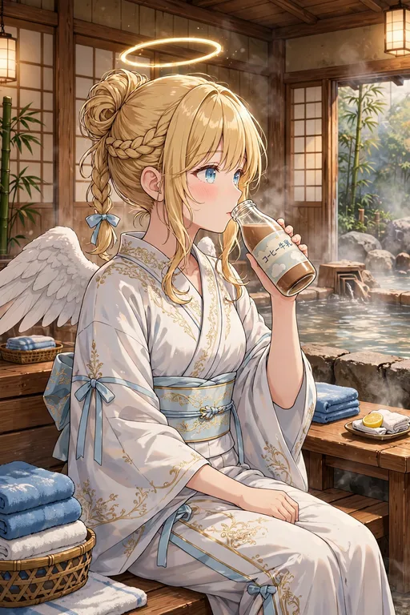
レア
温泉の休憩所で、湯上がりに浴衣を羽織って瓶のコーヒー牛乳を飲む場面。温泉上がりの定番を満喫する、ほっとした表情の一枚です。サービスシーン編の、湯上がりのひととき。
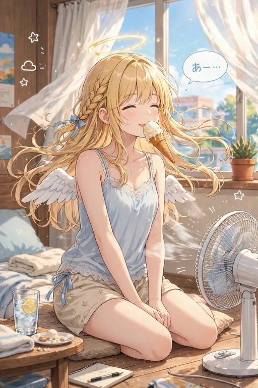
レア
真夏の部屋で、涼しい部屋着姿で扇風機の前に座りアイスを食べる場面。第3弾の「扇風機の前で『あー』」に続く、夏の部屋の風景です。
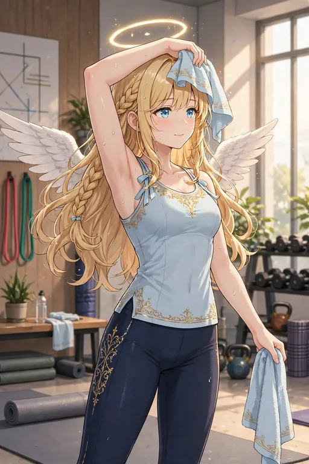
ノーマル
ジムでトレーニングウェア姿でストレッチをし、汗をぬぐう場面。癒す側も身体づくりは欠かせません。お仕事編につながる、健康的な一枚。

レア
ハロウィンの夜、日本橋で小悪魔コスプレに挑戦した場面。かぼちゃランタンを手に、いつもとは違う装いを楽しんでいます。天使が小悪魔に扮する、ハロウィンならではの遊び心です。
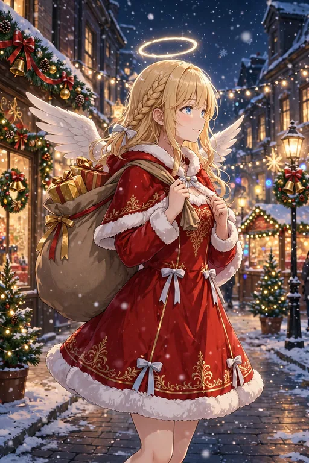
激レア
クリスマスの街で、白いファー付きの赤いサンタドレス姿でプレゼント袋を担ぐ場面。第3弾のイルミネーションの景色と響き合う、冬の行事の一枚です。

レア
バレンタインに、ハート柄のピンクのエプロン姿で手作りチョコを差し出す場面。感謝の気持ちを形にする、日本のバレンタインの習わしです。
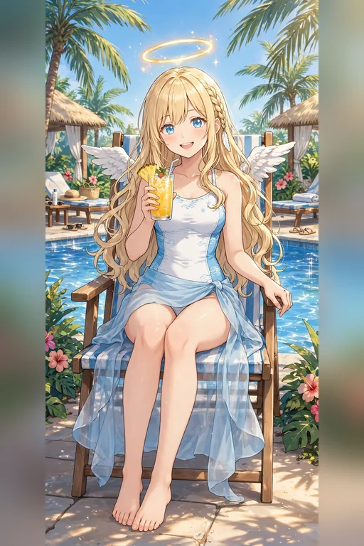
ノーマル
リゾートのプールサイドで、水着に水色のパレオを巻いてトロピカルジュースを飲む場面。南国の花とヤシの木に囲まれた、休日のごほうびのような一枚です。
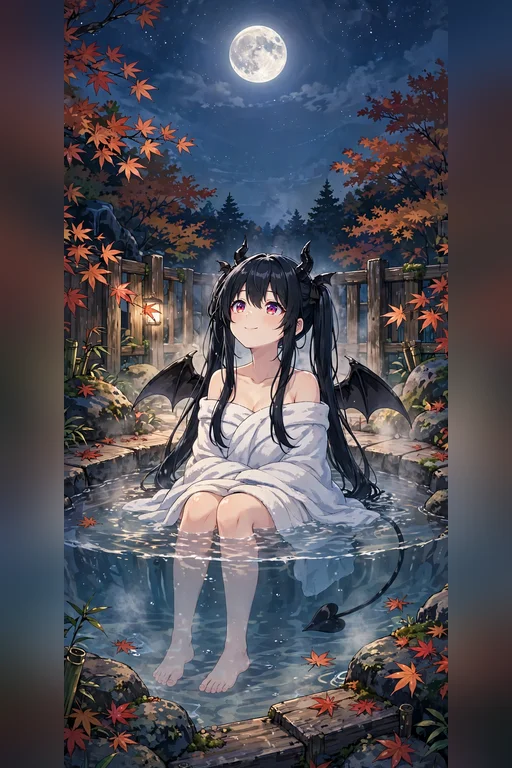
レア
紅葉の露天風呂で、タオル姿のルチアが満月を見上げる場面。人前では見せない、ほっとした素顔がのぞく一枚です。サービスシーン編の、湯けむりのひととき。
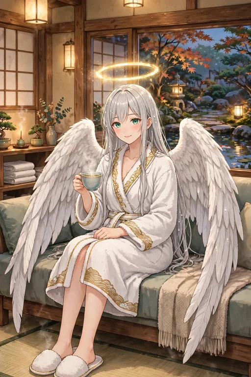
ノーマル
旅館のラウンジで、湯上がりのガブリエラが白いバスローブ姿でハーブティーを味わう場面。夕方の庭を眺める、穏やかで凛とした一枚です。
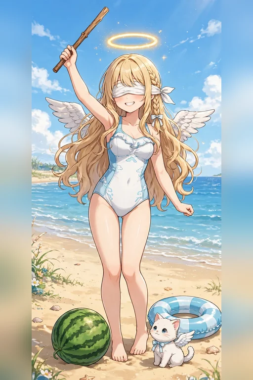
ノーマル
ビーチで目隠しをしてスイカ割りに挑む場面。そばではモコが浮き輪の横で見守っています。当たるかどうかは運しだい、夏の遊びの一枚です。
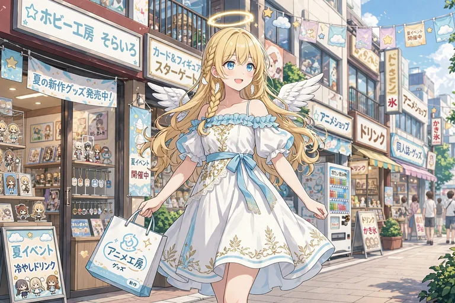
レア
夏の日本橋を、白×水色のオフショルダーワンピースで歩く場面。肩出しの涼しい装いで紙袋を提げ、夏の新作グッズ巡りを楽しんでいます。サービスシーン編の、夏のおでかけの一枚です。
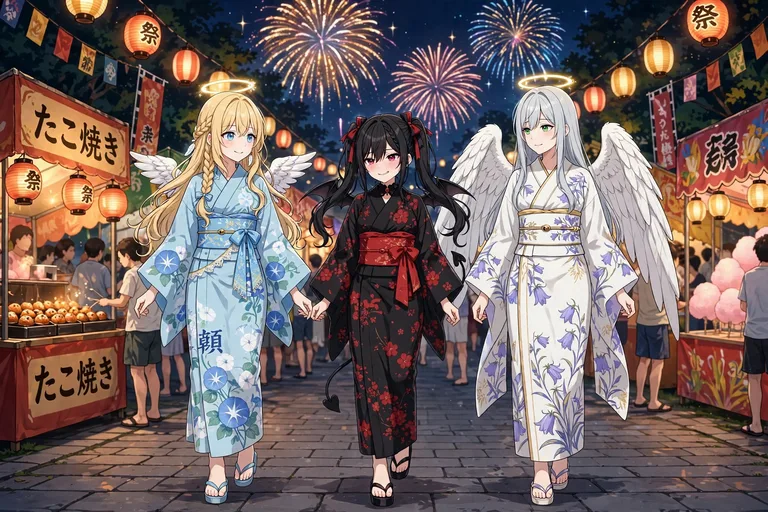
激レア
夏祭りの夜、花火と屋台の明かりのなかを、浴衣姿の三人で歩く場面。セラフィナは水色の朝顔柄、ルチアは黒地に赤い花柄、ガブリエラは白地に桔梗柄の浴衣です。サービスシーン編のキービジュアルです。
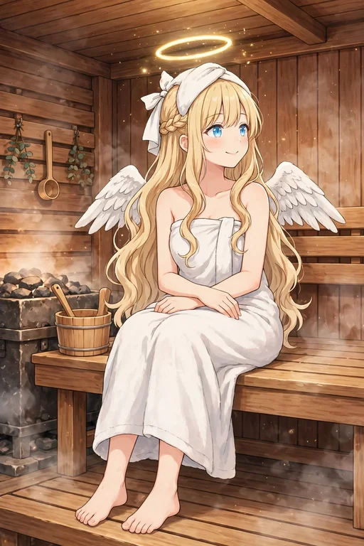
ノーマル
木のサウナ室で、タオルを巻いてベンチに座る場面。頭のタオルとほんのり上気した頬で、すっかり「ととのう」心地よさに浸っています。
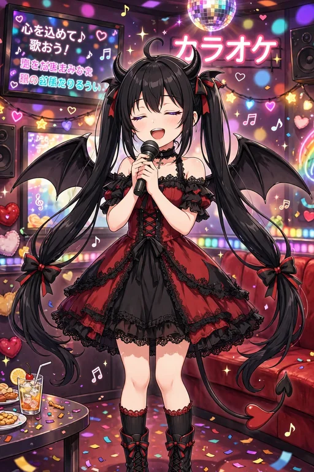
レア
カラオケで、ルチアが黒×赤のオフショルダーのゴシックドレスで熱唱する場面。ミラーボールの光のなか、堕落作戦そっちのけで歌い上げる一枚です。
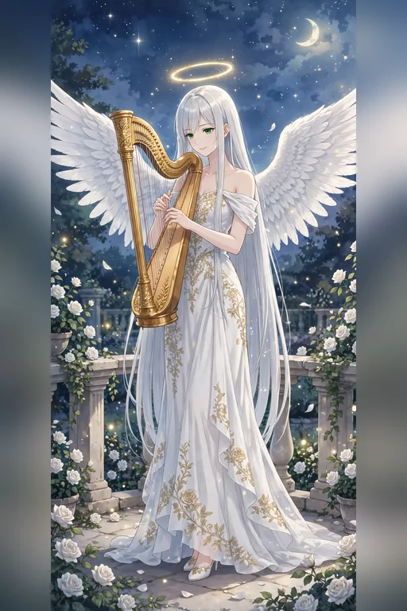
レア
月夜のテラスで、ガブリエラが白いオフショルダーのガウン姿で金のハープを奏でる場面。白バラと星明かりに包まれた、静かで幻想的な一枚です。
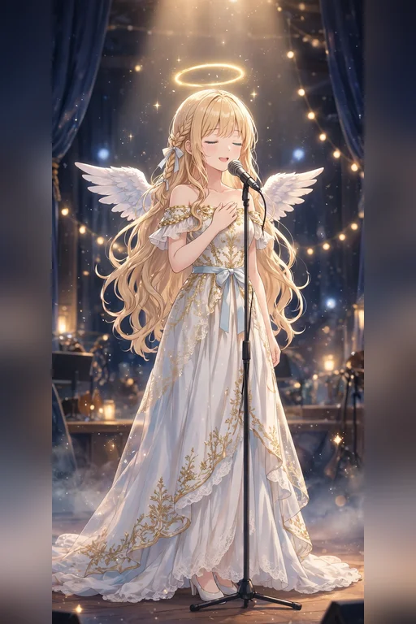
レア
ステージのスポットライトのなか、白×金のオフショルダードレスで歌う場面。胸に手を当てて目を閉じる姿が印象的な、歌の一枚です。
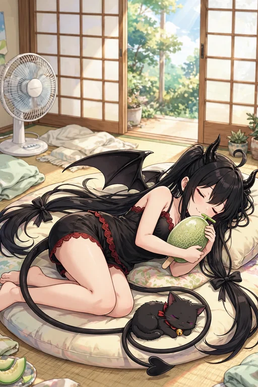
ノーマル
真夏の部屋で、ルチアが黒の部屋着姿でクッションに寝転び、メロンアイスを抱える場面。尾の先ではノワールが丸くなって眠っています。だらけた夏の昼下がりです。
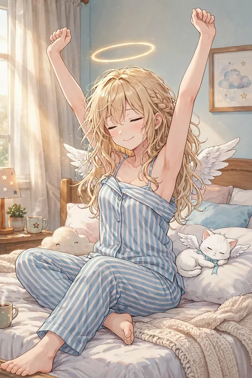
ノーマル
朝の光のなか、寝起きのパジャマ姿で大きく伸びをする場面。枕元ではモコがまだ夢のなかです。休日の朝の、ゆるやかな一枚。
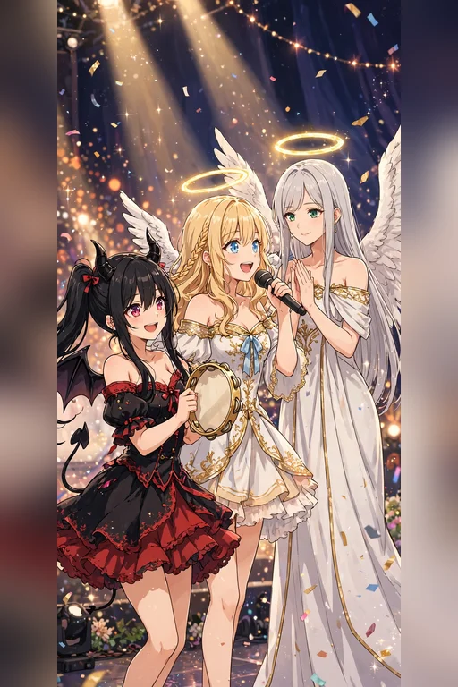
激レア
ステージで三人がそろうフィナーレの場面。中央で歌うセラフィナ、タンバリンのルチア、手拍子のガブリエラ。紙吹雪とスポットライトに包まれた、サービスシーン編のフィナーレを飾る一枚です。